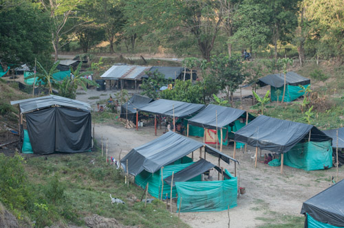
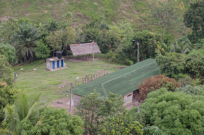
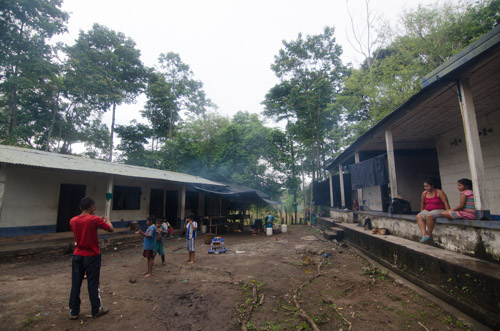

<!DOCTYPE html>
<html lang="en">
<head>
    <meta charset="UTF-8">
    <meta name="viewport" content="width=device-width, initial-scale=1.0">
    <title>Document</title>
    <link rel="Stylesheet" href="leaflet.css">
    <link rel="Stylesheet" href="ejemplo.css">
    <script src="leaflet.js"></script>
    <script src="provider.js"></script>
    <script src="data/puerto_boyaca.geojson"></script>
    <script src="data/quinchas_1.geojson"></script>
    <script src="data/quinchas_2.geojson"></script>        
    <script src="data/predial.geojson"></script>
    <script src="data/vias_1.geojson"></script>
    <script src="data/vias_2.geojson"></script>
    <script src="data/sendero_a.geojson"></script>
    <script src="data/sendero_b.geojson"></script>
    <script src="data/vias_1.geojson"></script>
    <script src="data/vias_2.geojson"></script>
    <script src="data/resguardos_alto_san_juan.geojson"></script>
</head>
<body>

<div id='mapa'></div>
<script>
   
   var mymap = L.map('mapa').setView([5.96010,-74.58968], 10);
   


    var satelite = L.tileLayer('https://server.arcgisonline.com/ArcGIS/rest/services/World_Imagery/MapServer/tile/{z}/{y}/{x}', {
	    attribution: ''
    }).addTo(mymap);
    

    var OSM = L.tileLayer('https://{s}.tile.openstreetmap.fr/osmfr/{z}/{x}/{y}.png', {
	maxZoom: 20,
	attribution: '&copy; Openstreetmap France | &copy; <a href="https://www.openstreetmap.org/copyright">OpenStreetMap</a> contributors'
}).addTo(mymap);

    
    function puertoStyle(feature) {
    return {
        fillColor: 'red',
        weight: 2,
        opacity: 1,
        color: 'black',
        dashArray: '1',
        fillOpacity: 0.1
    };
}
    var puerto =L.geoJson(puerto_boyaca,{style: puertoStyle}).addTo(mymap);    

    function senderoStyle(feature) {
    return {
        fillColor: 'red',
        weight: 2,
        opacity: 1,
        color: 'red',
        dashArray: '4',
        fillOpacity: 0.1
    };
}

function resguardos_alto_san_juanStyle(feature){
            return {
                fillColor : 'green',
                weight : 2, 
                opacity : 0.99,
                color : 'black', 
                dashArray : 1, 
                fillOpacity : 0.5
            }
        }

    var resguardos_alto_san_juan = L.geoJson(
        resguardos_alto_san_juan,
        {style : resguardos_alto_san_juanStyle}
        ).addTo(mymap);

    var sendero_a =L.geoJson(sendero_a,{style: senderoStyle}).addTo(mymap);  
    var sendero_b =L.geoJson(sendero_b,{style: senderoStyle}).addTo(mymap);  

    

    function viasStyle(feature) {
    return {
        fillColor: 'red',
        weight: 2,
        opacity: 0.8,
        color: 'red',
        dashArray: '0',
        fillOpacity: 0.1
    };
}
    var vias_a =L.geoJson(viasa,{style: viasStyle}).addTo(mymap); 
    var vias_b =L.geoJson(viasb,{style: viasStyle}).addTo(mymap);  
            
    function quinchasStyle(feature) {
    return {
        fillColor: 'green',
        weight: 2,
        opacity: 1,
        color: 'black',
        dashArray: '1',
        fillOpacity: 0.5
    };
}

    var quinchas =L.geoJson(quinchasa,{style: quinchasStyle}).addTo(mymap); 
    var quinchasb =L.geoJson(quinchasb,{style: quinchasStyle}).addTo(mymap);  
    
    function predialStyle(feature) {
    return {
        fillColor: 'red',
        weight: 2,
        opacity: 1,
        color: 'black',
        dashArray: '1',
        fillOpacity: 1
    };
}
    var predial =L.geoJson(predial,{style: predialStyle}).addTo(mymap); 

  

        var point = [5.958819,-74.593752];
        var marker =L.marker(point).addTo(mymap);
        var myMarker = L.marker(point);
        myMarker.addTo(mymap);
        myMarker.bindPopup(
            '<b>Casaloma embera katío</b> <div><image style="width: 100%"  </div>',
            {minWidth:300}
        );
   
        var point2 = [6.0042667,-74.3731924];
        var marker2 =L.marker(point2).addTo(mymap);
        var myMarker2 = L.marker(point2);
        myMarker2.addTo(mymap);
        myMarker2.bindPopup(
            '<b>Motordochake embera chamí</b> <div><image style="width: 100%"  </div>',
            {minWidth:300}
        );
        var point3 = [5.911639,-74.400042];
        var marker3 =L.marker(point3).addTo(mymap);
        var myMarker3 = L.marker(point3);
        myMarker3.addTo(mymap);
        myMarker3.bindPopup(
            '<b>Hacienda Bombay</b> <div><image style="width: 100%"  </div>',
            {minWidth:300}
        );

        var point4 = [5.93360,-74.25835];
        var marker4 =L.marker(point4).addTo(mymap);
        var myMarker4 = L.marker(point4);
        myMarker4.addTo(mymap);
        myMarker4.bindPopup(
            '<b>Parque Regional Serranía de Las Quinchas</b>',
            {minWidth:300}
        );
        var point5 = [5.33194,-76.23037];
        var marker5 =L.marker(point5).addTo(mymap);
        var myMarker5 = L.marker(point5);
        myMarker5.addTo(mymap);
        myMarker5.bindPopup(
            '<b>Resguardo Peñas del Olvido (Tadó, Chocó)</b>',
            {minWidth:300}
        );
        var point6 = [5.38369,-76.14526];
        var marker6 =L.marker(point6).addTo(mymap);
        var myMarker6 = L.marker(point6);
        myMarker6.addTo(mymap);
        myMarker6.bindPopup(
            '<b>Resguardo Gitto Docabú (Pueblo Rico Risaralda)</b>',
            {minWidth:300}
        );
        var point7 = [5.3411389,-76.1464993];
        var marker7 =L.marker(point7).addTo(mymap);
        var myMarker7 = L.marker(point7);
        myMarker7.addTo(mymap);
        myMarker7.bindPopup(
            '<b>Corregimiento Santa Cecilia (Pueblo Rico, Risaralda)</b>',
            {minWidth:300}
        );
        var point8 = [5.296922,-76.151634];
        var marker8 =L.marker(point8).addTo(mymap);
        var myMarker8 = L.marker(point8);
        myMarker8.addTo(mymap);
        myMarker8.bindPopup(
            '<b>Quebrada Amurrupá (Pueblo Rico, Risaralda)</b>',
            {minWidth:300}
        );


    var baseMaps = {
    "Imagen satelital": satelite,
    "Open Street Maps": OSM

    };

    var overlayMaps = {
    "Puerto Boyacá": puerto,
    "Serranía de Las Quinchas (Puerto Boyacá)": quinchas,
    "Serranía de Las Quinchas (Otanche)": quinchasb,
    "Asentamientos embera": predial,
    "sendero 1": sendero_a, 
    "sendero 2": sendero_b,
    "Vías Puerto Boyacá": vias_a,
    "Resguardos embera Alto San Juan": resguardos_alto_san_juan
    
    };

    L.control.layers(baseMaps, overlayMaps).addTo(mymap);

    L.control.scale().addTo(mymap);


</script>

</body>
</html>